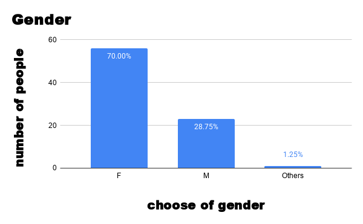
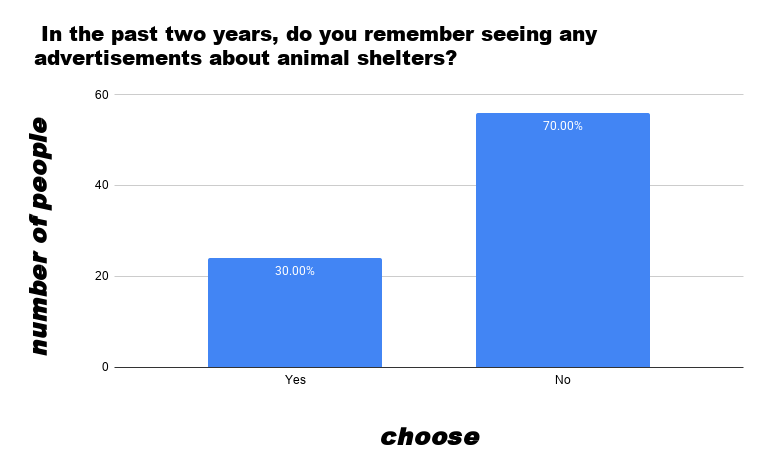
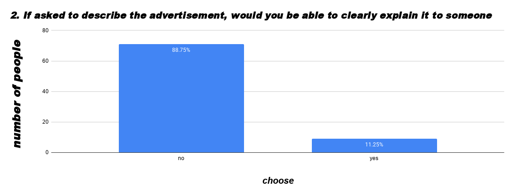
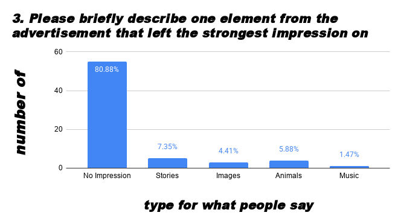
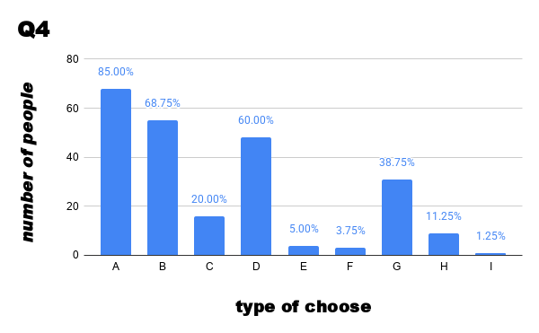

Kailyn
Kailyn
Data
For this chapter I am going to introduce who was answering our survey.
There were 80 people who answered our survey, which was 70% female, 28.75% Male and 1.25%Other.

| gender | count | percentage |
|---|---|---|
| Famale | 56 | 70.00% |
| Male | 23 | 28.75% |
| Others | 1 | 1.25% |
| Total | 80 | 100.00% |
For the gender I’m choosing a bar chart to show these data comparisons between the different gender groups. That was very disparity data, if I used a pie chart, we may not see ”Others”.
In the age groups, there was 56.25% 13-17y, 2.50% 18-24y, 3.75% 25-34y, 10% 35-44y, 21.25% 45-54y and 6.25% 55y↑, according to our survey.

| age | count | percentage |
|---|---|---|
| 12y ↓ | 0 | 0.00% |
| 13-17y | 45 | 56.25% |
| 18-24y | 2 | 2.50% |
| 25-34y | 3 | 3.75% |
| 35-44y | 8 | 10.00% |
| 45-54y | 17 | 21.25% |
| 55y ↑ | 5 | 6.25% |
| Total | 80 | 100.00% |
For the age groups, I’m choosing to use a pie chart, because it has 7 categories and I want to show the total
breakdown of the different age groups.
And if we used a bar chart, that will have so many data bars,
and we cannot be very sure what is what.
Survey
Q1:In the past two years, do you remember seeing any advertisements about animal shelters? (Please answer based on your memory. )☐ Yes
☐ No
For this question the exact question asked is “In the past two years, do you remember seeing any
advertisements about animal shelters?"
And the main goal is we want to know if the shelter ads are common to people or not.
This question is single-choice, for the options that is Yes, they remember seeing any ads about animal
shelters. And No, they do not remember seeing any ads about animal shelters.
For this question the type of data is categorical.

I am using the Bar chart. The reason I choose that is because the bar chart is easy to show just for
two choices.
A majority of respondents, accounting for 70%, do not remember seeing any ads about animal
shelters.
And less of respondents, accounting for 30% seeing any ads about animal shelters.
| options | count | percentage |
|---|---|---|
| Yes | 24 | 30.00% |
| No | 56 | 70.00% |
| Total | 80 | 100.00% |
☐ Yes
☐ No
For this question the exact question asked is “If asked to describe the advertisement, would you be able to
clearly explain it to someone else? “
And the main goal is we are trying to look for “If the ads are effective”?
And this will help me know the ads enough to catch public eyes, or make people want to care about this
topic.
This question is single-choice, the options are, Yes, they would be able to clearly explain it to someone
else. And No, they would not be able to clearly explain it to someone else.
For this question the type of data is categorical.

I am using the Bar chart. The reason I choose that is because the bar chart can see different types, which
is the first most choice.
A majority of respondents, accounting for 88.75%, they would not be able to clearly explain it to someone
else.
and less of respondents, accounting for 11.25% they would be able to clearly explain it to someone else.
| options | count | percentage |
|---|---|---|
| Yes | 9 | 11.25% |
| No | 71 | 88.75% |
| Total | 80 | 100.00% |
For this question the exact question asked is “Please briefly describe one element from the advertisement
that left the strongest impression on you “
And the main goal is we want to know what people want to see in ads to let them spare time to care about
it.
This question is Open-ended, so examples are “no impression, stories, images, animals, music. “
In this question we use 5 types to separate all the answers. There are people who talk about dogs are cute,
stories are rememberly and messages about the dog.

I am using the Bar chart. The reason I choose that is because the bar chart can see different types, also we
can easily say which is the less and most.
A majority of respondents, accounting for 80.88%, selected no impression, which is very different for people
who can briefly describe one element from the ads.
And less of respondents, accounting for 1.47% of people selected music, are the most able to describe
one element from the ads.
| options | count | percentage |
|---|---|---|
| No Impression | 55 | 80.88% |
| Stories | 5 | 7.35% |
| Images | 3 | 4.41% |
| Animals | 4 | 5.88% |
| Music | 1 | 1.47% |
☐ A. Information about the dogs (e.g., breed, age, personality)
☐ B. Shelter location
☐ C. Production quality of the advertisement (visuals, editing, etc.)
☐ D. Contact information
☐ E. Music
☐ F. Connection to current popular topics
☐ G. Benefits of getting involved or adopting
☐ H. Spokesperson or representative
☐ I. Other: ________________________
.For this question the exact question asked is “When you see an animal shelter advertisement, which
information do you think should be emphasized the most? “
And the main goal is we want to know what people want to see in ads to let them spare time to care about
it.
This question is multiple-selection, the options are A. Information about the dogs, B.Shelter location,
C.Production quality of the advertisement, D.Contact information, E.Music, F.Connection to current popular
topics, G.Benefits of getting involved or adopting, H.Spokesperson or representative, I.Others.
For this question the type of data is categorical.

I am using the Bar chart. The reason I choose that is because the bar chart can see different types, which
is the first most choice.
A majority of respondents, accounting for 85%,think information about dogs should be emphasized the most.
And less of respondents, accounting for 1.25% of people who think for our options, don’t have what
they think needs to be emphasized the most, so they choose others.
| options | count | percentage |
|---|---|---|
| A Information about the dogs | 67 | 28.88% |
| B Shelter location | 54 | 23.28% |
| C Production quality of the advertisement | 16 | 6.90% |
| D Contact information | 48 | 20.69% |
| E Music | 3 | 1.29% |
| F Connection to current popular topics | 3 | 1.29% |
| G Benefits of getting involved or adopting | 31 | 13.36% |
| H Spokesperson or representative | 9 | 3.88% |
| I Others | 1 | 0.43% |